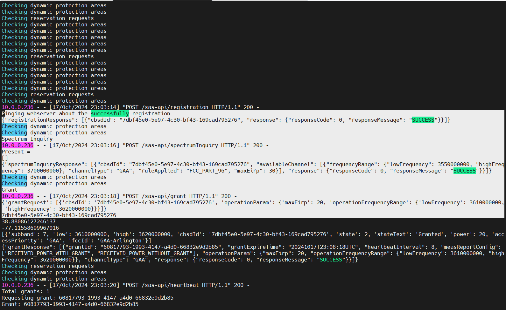
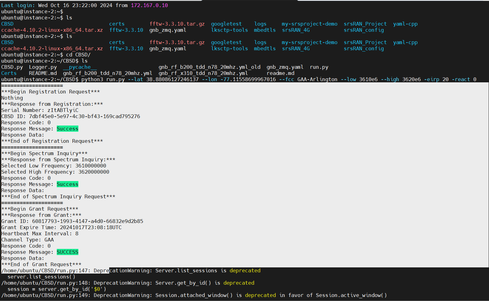
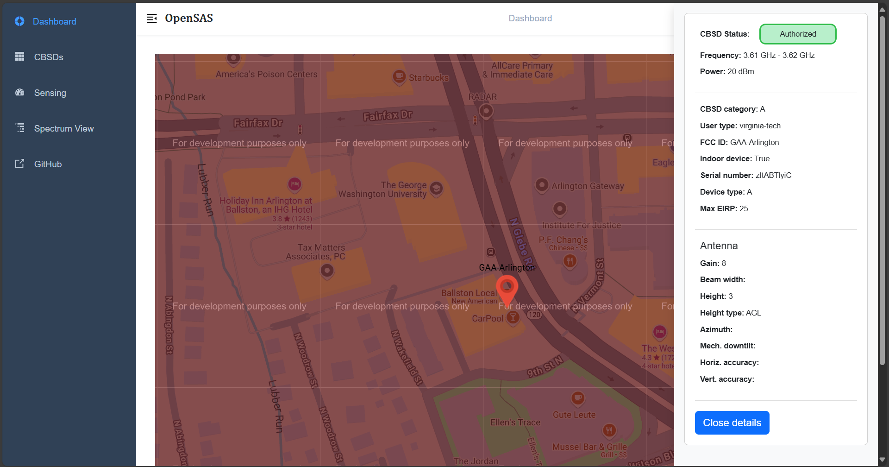
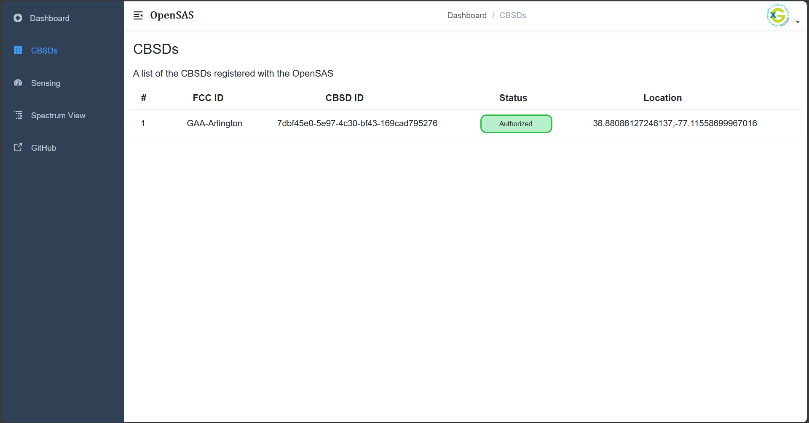
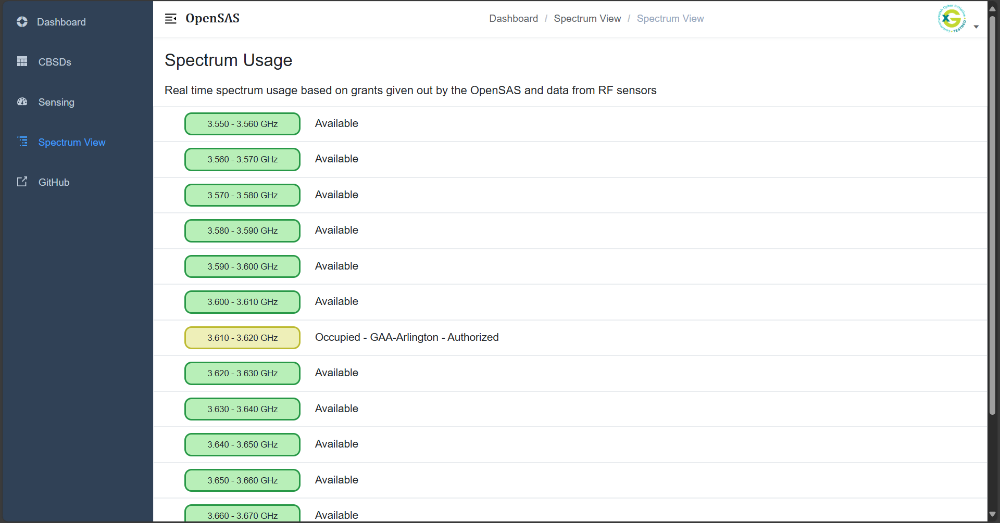
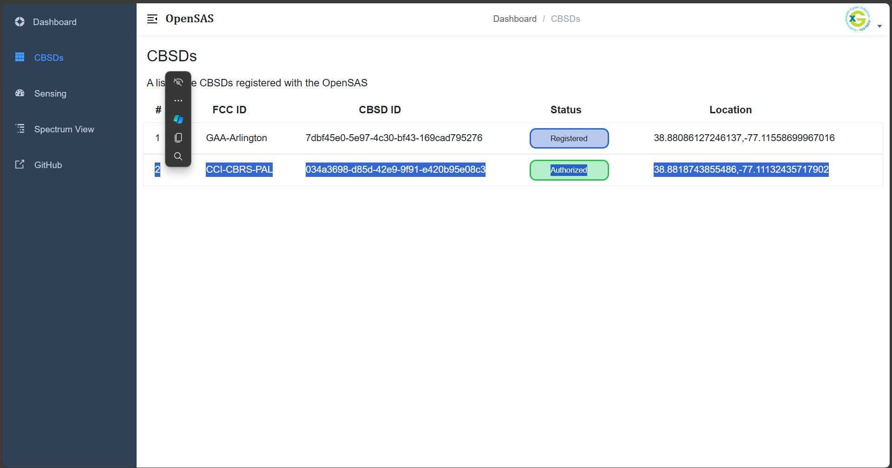

Experiments
The experiment is about demonstration of OpenSAS Server and CBSD Integration for GAA and PAL Operations using srsRAN and Open5GS. The setup will use one VM/PC running OpenSAS and dashboard and another VM/PC running CBSD client with srs gNB in ZMQ mode.
Setting Up the Testbed
The testbed consists of:
1. Start the OpenSAS Server
From the VM hosting OpenSAS, start the OpenSAS Server:
python server.pyFirst, ensure that the OpenSAS server is running.
2. Launching the OpenSAS Dashboard
Once started, launch the OpenSAS dashboard:
npm run devVerify that it is both operational and accessible at http://localhost:9528/.
3. Running the CBSD Client
In the VM hosting the CBSD client (with Open5GS core, srsRAN gNB, and RF frontend connected), run GAA CBSD first:
Open a New TMUX Session
This allows you to manage multiple terminal sessions.
Run the following command to start the GAA CBSD first
python3 run.py --lat 38.88086127246137 --lon -77.11558699967016 --fcc GAA-Arlington --low 3610e6 --high 3620e6 -eirp 20 -react 0
After running this, you should see a registration request from the CBSD client sent to OpenSAS, a spectrum inquiry, and then OpenSAS grants. The corresponding prints will show up in the OpenSAS dashboard and OpenSAS console. After a successful grant, another terminal will open up, starting the srsRAN 5G gNB.
You will now be able to view this CBSD information in the CBSD list, Spectrum list, and map in the OpenSAS dashboard.
The experiments can be found in Output for GAA Operation
4. Running the CBSD Client
Similarly, terminate the run.py program in the CBSD console and execute the PAL user CBSD client using:
python3 run.py --lat 38.8818743855486 --lon -77.11132435717902 --fcc CCI-CBRS-PAL --low 3610e6 --high 3620e6 -eirp 20 -react 0
The experiments can be found in Output for PAL Operation
5. Output for GAA Operation
This image shows the OpenSAS log indicating the CBSD registration.
 Figure 5: OpenSAS log indicating the CBSD registration.
{kind=link}
This image shows the CBSD console logs indicating the CBSD registration and messages for Spectrum Inquiry Request, Grant Request, and other info.
 Figure 6: CBSD console logs indicating registration and spectrum inquiries.
{kind=link}
This image shows the OpenSAS Dashboard where you can find the location of the CBSD using the map feature.
 Figure 7: OpenSAS Dashboard displaying CBSD location on the map.
{kind=link}
This image shows the authorized band for the CBSD post-grant response.

Figure 8: Authorized band for the CBSD after grant response.
This image shows the registered CBSD and its corresponding ID.
 Figure 9: Registered CBSD and its corresponding ID.
{kind=link}
6. Output for PAL Operation
This indicates the spectrum allocation for the PAL user.
 Figure 10: Spectrum allocation for the PAL user.
{kind=link}
This image shows the registered PAL CBSD user on the dashboard.
 Figure 11: Registered PAL CBSD user on the dashboard.
{kind=link}
{kind=link}